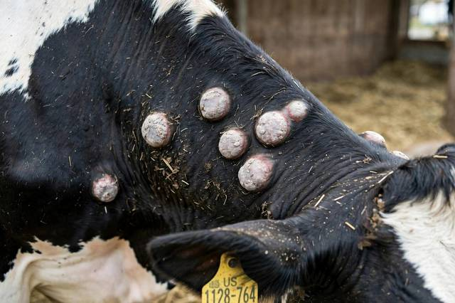
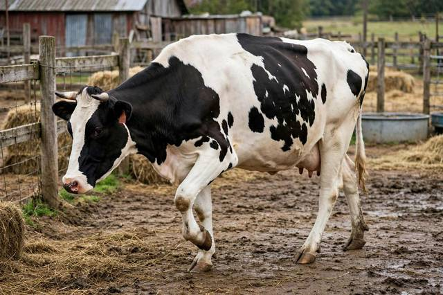
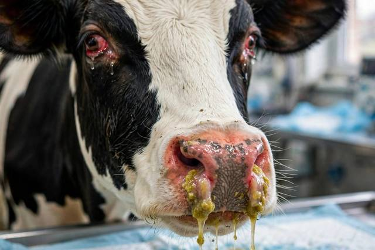

Lumpy skin disease (LSD) is a viral disease of cattle caused by lumpy skin disease virus, a capripoxvirus. It is characterised by fever and firm skin nodules and can cause production losses, hide damage, infertility problems and secondary infections. Buffalo susceptibility and disease patterns may differ by region.
On this page: clinical signs, causes and transmission, diagnosis, treatment principles and prevention.
🎥 Watch the Video
Watch our short VetCare World video on lumpy skin disease in cattle — signs, diagnosis, vaccination and control, explained simply.
Firm, raised nodules on the skin(Hard lumps on the skin)
5
Enlarged superficial lymph nodes(Swollen lymph nodes under the skin)
6
Oedema of the limbs or brisket(Swelling of the legs or chest)
7
Lameness(Limping and reluctance to move)
8
Nasal or ocular discharge(Runny nose or eyes)
9
Reduced milk yield(Milk drops)
10
Secondary skin infections(Infected sores on the skin)
FeverDepressionReduced appetite

Firm, raised nodules on the skinEnlarged superficial lymph nodesOedema of the limbs or brisket

Lameness

Nasal or ocular dischargeReduced milk yieldSecondary skin infections
Causes and Transmission
LSD is transmitted mainly by blood-feeding insects and other mechanical vectors. Movement of infected cattle, contaminated materials and close contact may contribute to spread. Vector activity and risk vary with climate and season.
Pathogenesis
Lumpy skin disease virus is introduced by the bite of an infected insect and first multiplies in local lymph nodes, then spreads through the blood to the skin and internal organs. In the skin the virus infects blood vessel walls and surrounding tissue, causing inflammation and the firm nodules that give the disease its name.
Nodules can also form in the mouth, airways and reproductive tract. Damaged skin and mucous membranes are easily infected by bacteria, causing secondary infections, and the fever and pain reduce feed intake and milk yield.
Veterinary Diagnosis
A veterinarian assesses the characteristic nodules, fever, epidemiological history and possible differential diagnoses. Laboratory confirmation, commonly by PCR on suitable samples, is important where available. Other skin conditions, insect bites and infections can resemble LSD.
Differential Diagnosis
Several conditions can look similar. A veterinarian distinguishes them by the signs, history and laboratory findings:
Pseudo-lumpy skin disease (bovine herpes mammillitis) — causes similar skin nodules but is usually milder and shorter-lived.
Dermatophilosis — causes crusty skin lesions without fever or firm nodules.
Insect-bite hypersensitivity — causes itchy skin lumps without fever or systemic illness.
Theileriosis — causes fever and enlarged lymph nodes, but without skin nodules.
Treatment and Case Management
There is no specific antiviral treatment that eliminates LSD virus. Veterinary management is supportive and may include wound care, hydration, nutrition, pain and fever control, and treatment of secondary bacterial infection when diagnosed. Medicines must be selected by a veterinarian, with withdrawal periods observed.
Important: Seek veterinary assessment for fever with multiple skin nodules, severe swelling, breathing difficulty, eye involvement or animals that stop eating or drinking.
Recommended Medicines
1
NSAID – Meloxicam(For fever and pain)0.5 mg/kg IV/SC once
2
Antibiotic – Oxytetracycline(Only for diagnosed secondary bacterial infection)10–20 mg/kg IM or SC daily
3
Fluid therapy – IV fluids(For dehydration and support)As prescribed by a veterinarian
4
Topical – Povidone-iodine(Clean and protect skin wounds)As prescribed by a veterinarian
⚠ Important Tips:
There is no specific antiviral cure — care is supportive and vet-directed.
Use antibiotics only for diagnosed secondary bacterial infection.
Protect skin wounds from flies and secondary infection.
Isolate sick animals and call the vet early.
Vaccination — follow the vet’s scheduleInjection — vet-administered onlyMedicines — only as prescribed by a veterinarian
Prevention and Farm Management
Use vaccines authorised for the region and follow official veterinary vaccination guidance
Control biting insects and reduce vector breeding sites where practical
Quarantine new or returning animals and monitor them before herd introduction
Restrict unnecessary movement during outbreaks and follow official directions
Clean and disinfect equipment and maintain good farm hygiene
Report suspected cases to the local veterinary authority
Key Takeaway
LSD control combines vaccination, vector management, movement precautions, early reporting and good supportive care.
Keep herd health records, consult a qualified veterinarian and follow the animal-health authority's current guidance for your region.
References
MSD Veterinary Manual. Merck & Co., Inc.
Radostits, O.M., Gay, C.C., Hinchcliff, K.W., Constable, P.D. Veterinary Medicine: A Textbook of the Diseases of Cattle, Horses, Sheep, Pigs and Goats.
WOAH (World Organisation for Animal Health). Manual of Diagnostic Tests and Vaccines for Terrestrial Animals.
WOAH (World Organisation for Animal Health). Terrestrial Animal Health Code.
Frequently Asked Questions
What are the symptoms of lumpy skin disease in cattle?
Fever, depression and reduced appetite, with firm raised nodules on the skin of the head, neck, limbs, udder and perineum. Lymph nodes may enlarge, and there may be limb swelling, lameness, nasal or eye discharge and reduced milk yield.
How does lumpy skin disease spread?
LSD is transmitted mainly by blood-feeding insects and other mechanical vectors. Movement of infected cattle, contaminated materials and close contact may also contribute to spread.
How is lumpy skin disease diagnosed?
A veterinarian assesses the characteristic nodules, fever, epidemiological history and possible differential diagnoses. Laboratory confirmation, commonly by PCR on suitable samples, is important where available.
How is lumpy skin disease in cattle treated?
There is no specific antiviral treatment that eliminates LSD virus. Veterinary management is supportive: wound care, hydration, nutrition, pain and fever control, and treatment of secondary bacterial infection when diagnosed. Always consult a veterinarian.
How can lumpy skin disease be prevented?
Use vaccines authorised for the region and follow official veterinary vaccination guidance. Control biting insects, quarantine new animals, restrict unnecessary movement during outbreaks and report suspected cases to the local veterinary authority.
What is LSD vaccine for cattle?
LSD vaccines authorised for the region should be used following official veterinary vaccination guidance. Vaccination, vector management, movement precautions and early reporting together control the disease.
Why does my cow have lumps on skin?
Firm raised nodules on the skin with fever are typical of lumpy skin disease. A veterinarian should assess the animal, as other skin conditions, insect bites and infections can resemble LSD, and laboratory confirmation by PCR is important where available.
گائے کی جلد پر گانٹھیں کیوں بنتی ہیں؟
لمپی اسکن بیماری میں بخار کے ساتھ جلد پر سخت گانٹھیں بنتی ہیں، جو سر، گردن، ٹانگوں اور تھنوں پر ہو سکتی ہیں۔ یہ بیماری خون چوسنے والے کیڑوں سے پھیلتی ہے۔ اس کا کوئی خاص اینٹی وائرل علاج نہیں، ویکسین اور کیڑوں پر قابو بچاؤ کا بہترین طریقہ ہے۔
✍️ Written by Dr. Shahid Bilal Depal, DVM (PVMC RVMP #15068)
This guide is for educational purposes. Consult a registered veterinarian for diagnosis and treatment.